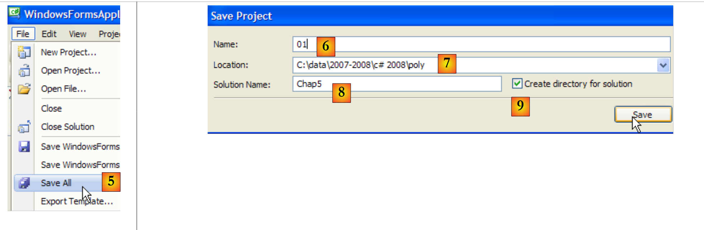
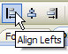
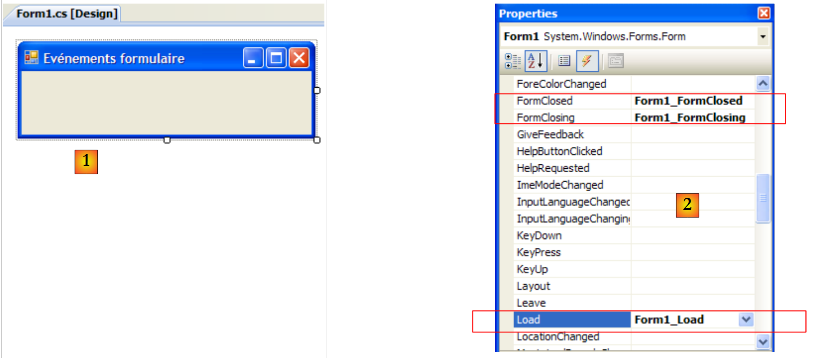
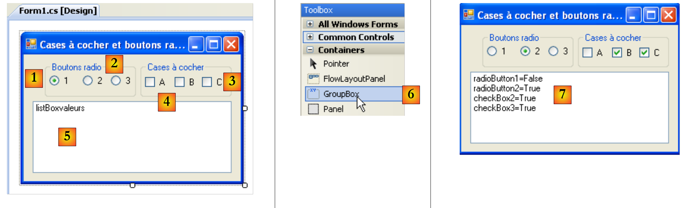
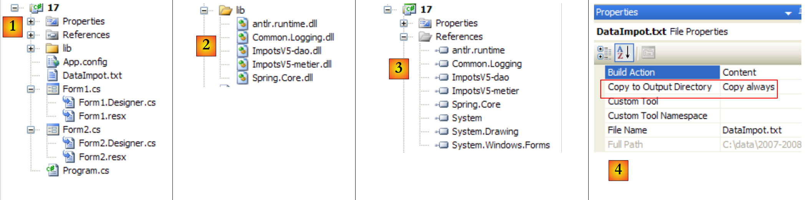
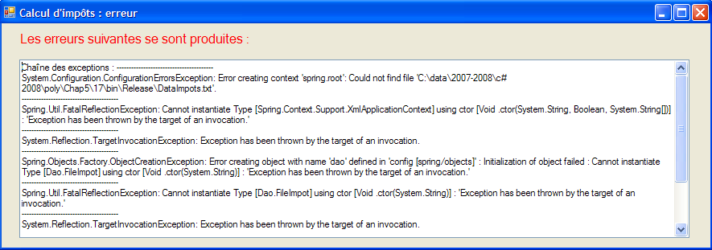
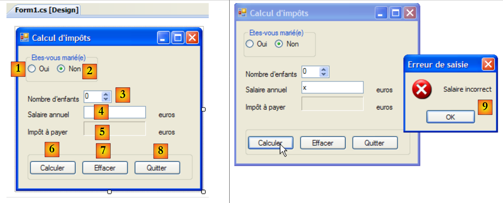

7. Grafische Benutzeroberflächen mit C# und VS.NET
7.1. Grundlagen grafischer Benutzeroberflächen
7.1.1. Ein erstes Projekt
Erstellen wir ein erstes Projekt vom Typ „Windows-Anwendung“:
 |
- [1]: Ein neues Projekt erstellen
- [2]: vom Typ „Windows-Anwendung“
- [3]: Der Name des Projekts spielt vorerst keine Rolle
- [4]: Das Projekt wurde erstellt
 |
- [5]: Die aktuelle Lösung wird gespeichert
- [6]: Projektname
- [7]: Ordner der Lösung
- [8]: Name der Lösung
- [9]: Es wird ein Ordner für die Lösung [Chap5] erstellt. Die darin enthaltenen Projekte werden in Unterordnern abgelegt.
 |
- [10]: Das Projekt [01] in der Lösung [Chap5]:
- [Program.cs] ist die Hauptklasse des Projekts
- [Form1.cs] ist die Quelldatei, die das Verhalten des Fensters [11] steuert
- [Form1.Designer.cs] ist die Quelldatei, die die Informationen zu den Komponenten des Fensters [11] kapselt
- [11]: die Datei [Form1.cs] im „Entwurfsmodus“ (Design)
- [12]: Die generierte Anwendung kann mit (Strg-F5) ausgeführt werden. Das Fenster [Form1] wird angezeigt. Es kann verschoben, in der Größe angepasst und geschlossen werden. Damit liegen die Grundelemente eines grafischen Fensters vor.
Die Hauptklasse [Program.cs] lautet wie folgt:
using System;
using System.Windows.Forms;
namespace Chap5 {
static class Program {
/// <summary>
/// Der Haupteinstiegspunkt für die Anwendung.
/// </summary>
[STAThread]
static void Main() {
Application.EnableVisualStyles();
Application.SetCompatibleTextRenderingDefault(false);
Application.Run(new Form1());
}
}
}
- Zeile 2: Anwendungen mit Formularen verwenden den Namensraum System.Windows.Forms.
- Zeile 4: Der ursprüngliche Namensraum wurde in „Chap5“ umbenannt.
- Zeile 10: Bei der Ausführung des Projekts (Strg-F5) wird die Methode [Main] ausgeführt.
- Zeilen 11–13: Die Klasse Application gehört zum Namensraum System.Windows.Forms. Sie enthält statische Methoden zum Starten und Beenden von grafischen Windows-Anwendungen.
- Zeile 11: optional – ermöglicht es, den in einem Formular platzierten Steuerelementen unterschiedliche visuelle Stile zuzuweisen
- Zeile 12: optional – legt die Rendering-Engine für die Texte der Steuerelemente fest: GDI+ (true), GDI (false)
- Zeile 13: Die einzige unverzichtbare Zeile der Methode [Main]: Instanziiert die Klasse [Form1], bei der es sich um die Formularklasse handelt, und weist sie an, ausgeführt zu werden.
Die Quelldatei [Form1.cs] lautet wie folgt:
using System;
using System.Windows.Forms;
namespace Chap5 {
public partial class Form1 : Form {
public Form1() {
InitializeComponent();
}
}
}
- Zeile 5: Die Klasse Form1 leitet sich von der Klasse [System.Windows.Forms.Form] ab, die die Basisklasse für alle Fenster ist. Das Schlüsselwort „partial“ gibt an, dass es sich um eine partielle Klasse handelt, die durch andere Quelldateien ergänzt werden kann. Dies ist hier der Fall, wo die Klasse „Form1“ auf zwei Dateien verteilt ist:
- [Form1.cs]: Hier sind das Verhalten des Formulars, insbesondere seine Ereignisbehandler, definiert
- [Form1.Designer.cs]: In dieser Datei befinden sich die Formularkomponenten und ihre Eigenschaften. Diese Datei wird jedes Mal neu generiert, wenn der Benutzer das Fenster im Modus [conception] ändert.
- Zeilen 6–8: der Konstruktor der Klasse Form1
- Zeile 7: Ruft die Methode InitializeComponent auf. Man sieht, dass diese Methode in [Form1.cs] nicht vorhanden ist. Sie ist in [Form1.Designer.cs] zu finden.
Die Quelldatei [Form1.Designer.cs] lautet wie folgt:
namespace Chap5 {
partial class Form1 {
/// <summary>
/// Erforderliche Designer-Variable.
/// </summary>
private System.ComponentModel.IContainer components = null;
/// <summary>
/// Alle verwendeten Ressourcen bereinigen.
/// </summary>
/// <param name="disposing">true, wenn verwaltete Ressourcen freigegeben werden sollen; andernfalls false.</param>
protected override void Dispose(bool disposing) {
if (disposing && (components != null)) {
components.Dispose();
}
base.Dispose(disposing);
}
#– Vom Windows-Forms-Designer generierter Code
/// <summary>
/// Erforderliche Methode für die Designer-Unterstützung – nicht ändern
/// den Inhalt dieser Methode nicht mit dem Code-Editor.
/// </summary>
private void InitializeComponent() {
this.SuspendLayout();
//
// Form1
//
this.AutoScaleDimensions = new System.Drawing.SizeF(6F, 13F);
this.AutoScaleMode = System.Windows.Forms.AutoScaleMode.Font;
this.ClientSize = new System.Drawing.Size(196, 98);
this.Name = "Form1";
this.Text = "Form1";
this.ResumeLayout(false);
}
#endregion
}
}
- Zeile 2: Es handelt sich weiterhin um die Klasse Form1. Es ist zu beachten, dass nicht mehr wiederholt werden muss, dass sie von der Klasse Form abgeleitet ist.
- Zeilen 25–37: Die Methode InitializeComponent, die vom Konstruktor der Klasse [Form1] aufgerufen wird. Diese Methode erstellt und initialisiert alle Komponenten des Formulars. Sie wird bei jeder Änderung des Formulars im Modus [conception] neu generiert. Ein Abschnitt mit dem Namen région wird erstellt, um das Formular abzugrenzen (Zeilen 19–39). Der Entwickler darf in diesem Bereich keinen Code hinzufügen: Er wird bei der nächsten Neugenerierung überschrieben.
Es ist zunächst einfacher, den Code von [Form1.Designer.cs] zunächst außer Acht zu lassen. Er wird automatisch generiert und ist die Umsetzung der vom Entwickler im Modus [conception] getroffenen Entscheidungen in die Sprache C#. Betrachten wir ein erstes Beispiel:
 |
- [1]: Wählen Sie den Modus [conception] aus, indem Sie auf die Datei [Form1.cs] doppelklicken
- [2]: Klicken Sie mit der rechten Maustaste auf das Formular und wählen Sie [Properties]
- [3]: Das Eigenschaftenfenster von [Form1]
- [4]: Die Eigenschaft [Text] stellt den Titel des Fensters dar
- [5]: Die Änderung der Eigenschaft [Text] wird im Modus [conception] sowie im Quellcode [Form1.Designer.cs] berücksichtigt:
private void InitializeComponent() {
this.SuspendLayout();
...
this.Text = "Mon 1er formulaire";
...
}
7.1.2. Ein zweites Projekt
7.1.2.1. Das Formular
Wir beginnen ein neues Projekt mit dem Namen 02. Dazu befolgen wir die zuvor beschriebene Vorgehensweise zum Anlegen eines Projekts. Das zu erstellende Fenster sieht wie folgt aus:
 |
Das Formular besteht aus folgenden Komponenten:
Nr. | Name | Typ | Rolle |
1 | labelSaisie | Bezeichnung | Bezeichnung |
2 | textBoxSaisie | TextBox | ein Eingabefeld |
3 | buttonAfficher | Schaltfläche | um den Inhalt des Eingabefelds in einem Dialogfeld anzuzeigen textBoxSaisie |
Zur Erstellung dieses Fensters kann wie folgt vorgegangen werden:
 |
- [1]: Klicken Sie mit der rechten Maustaste außerhalb einer Komponente auf das Formular und wählen Sie die Option [Properties]
- [2]: Das Eigenschaftenfenster des Fensters wird in der unteren rechten Ecke von Visual Studio angezeigt
Zu den zu beachtenden Eigenschaften des Formulars gehören:
zum Festlegen der Hintergrundfarbe des Fensters | |
zum Festlegen der Farbe der Grafiken oder des Texts im Fenster | |
um dem Fenster ein Menü zuzuweisen | |
um dem Fenster einen Titel zu geben | |
um den Fenstertyp festzulegen | |
um die Schriftart für die Texte im Fenster festzulegen | |
um den Namen des Fensters festzulegen |
Hier legen wir die Eigenschaften Text und Name fest:
Eingabefelder und Schaltflächen – 1 | |
frmSaisiesBoutons |
 |
- [1]: Wählen Sie die Toolbox „[Common Controls]“ aus den von Visual Studio angebotenen Toolboxen aus
- [2, 3, 4]: Doppelklicken Sie nacheinander auf die Komponenten [Label], [Button] und [TextBox]
- [5]: Die drei Komponenten befinden sich auf dem Formular
Um die Komponenten korrekt auszurichten und zu skalieren, können die Elemente der Symbolleiste verwendet werden:
 | |||||||||
 | |||||||||
Das Prinzip der Formatierung ist wie folgt:
- Wählen Sie die verschiedenen Komponenten aus, die gemeinsam formatiert werden sollen (halten Sie die Strg-Taste gedrückt, während Sie die Komponenten anklicken)
- Wählen Sie die gewünschte Formatierungsart aus:
- (Fortsetzung)
- Mit den Optionen Align können Komponenten oben, unten, links, rechts oder mittig ausgerichtet werden
- Mit den Optionen „Make Same Size“ können Komponenten auf die gleiche Höhe oder Breite gebracht werden
- Mit der Option „Horizontal Spacing“ können Komponenten horizontal mit gleich breiten Abständen zueinander ausgerichtet werden. Gleiches gilt für die Option „Vertical Spacing“ zur vertikalen Ausrichtung.
- Mit der Option „Center“ kann eine Komponente horizontal (Horizontally) oder vertikal (Vertically) im Fenster zentriert werden
Nachdem die Komponenten platziert wurden, legen wir ihre Eigenschaften fest. Klicken Sie dazu mit der rechten Maustaste auf die Komponente und wählen Sie die Option Properties:
 |
- [1]: Wählen Sie die Komponente aus, um das Eigenschaftenfenster zu öffnen. Ändern Sie darin die folgenden Eigenschaften: name: labelSaisie, text: Saisie
- [2]: Gehen Sie genauso vor: name: textBoxSaisie, text: nichts eingeben
- [3]: name: buttonAfficher, text: Afficher
- [4]: das Fenster selbst: Name: frmSaisiesBoutons, Text: Eingabefelder und Schaltflächen – 1
- [5]: Führen Sie das Projekt aus (Strg-F5), um einen ersten Eindruck vom Fenster in Aktion zu erhalten.
Was im Modus [conception] erstellt wurde, wurde in den Code von [Form1.Designer.cs] übersetzt:
namespace Chap5 {
partial class frmSaisiesBoutons {
...
private System.ComponentModel.IContainer components = null;
...
private void InitializeComponent() {
this.labelSaisie = new System.Windows.Forms.Label();
this.buttonAfficher = new System.Windows.Forms.Button();
this.textBoxSaisie = new System.Windows.Forms.TextBox();
this.SuspendLayout();
//
// labelSaisie
//
this.labelSaisie.AutoSize = true;
this.labelSaisie.Location = new System.Drawing.Point(12, 19);
this.labelSaisie.Name = "labelSaisie";
this.labelSaisie.Size = new System.Drawing.Size(35, 13);
this.labelSaisie.TabIndex = 0;
this.labelSaisie.Text = "Saisie";
//
// buttonAfficher
//
this.buttonAfficher.Location = new System.Drawing.Point(80, 49);
this.buttonAfficher.Name = "buttonAfficher";
this.buttonAfficher.Size = new System.Drawing.Size(75, 23);
this.buttonAfficher.TabIndex = 1;
this.buttonAfficher.Text = "Afficher";
this.buttonAfficher.UseVisualStyleBackColor = true;
this.buttonAfficher.Click += new System.EventHandler(this.buttonAfficher_Click);
//
// textBoxSaisie
//
this.textBoxSaisie.Location = new System.Drawing.Point(80, 19);
this.textBoxSaisie.Name = "textBoxSaisie";
this.textBoxSaisie.Size = new System.Drawing.Size(100, 20);
this.textBoxSaisie.TabIndex = 2;
//
// frmSaisiesBoutons
//
this.AutoScaleDimensions = new System.Drawing.SizeF(6F, 13F);
this.AutoScaleMode = System.Windows.Forms.AutoScaleMode.Font;
this.ClientSize = new System.Drawing.Size(292, 118);
this.Controls.Add(this.textBoxSaisie);
this.Controls.Add(this.buttonAfficher);
this.Controls.Add(this.labelSaisie);
this.Name = "frmSaisiesBoutons";
this.Text = "Saisies et boutons - 1";
this.ResumeLayout(false);
this.PerformLayout();
}
private System.Windows.Forms.Label labelSaisie;
private System.Windows.Forms.Button buttonAfficher;
private System.Windows.Forms.TextBox textBoxSaisie;
}
}
- Zeilen 53–55: Aus den drei Komponenten sind drei private Felder der Klasse [Form1] entstanden. Es ist zu beachten, dass die Namen dieser Felder den Namen entsprechen, die den Komponenten im Modus [conception] gegeben wurden. Dies gilt auch für das Formular in Zeile 2, bei dem es sich um die Klasse selbst handelt.
- Zeilen 7–9: Die drei Objekte vom Typ [Label], [TextBox] und [Button] werden erstellt. Über sie werden die visuellen Komponenten verwaltet.
- Zeilen 14–19: Konfiguration des Labels labelSaisie
- Zeilen 23–29: Konfiguration der Schaltfläche buttonAfficher
- Zeilen 33–36: Konfiguration des Eingabefelds textBoxSaisie
- Zeilen 40–47: Konfiguration des Formulars frmSaisiesBoutons. Beachten Sie in den Zeilen 43–45, wie Komponenten zum Formular hinzugefügt werden.
Dieser Code ist verständlich. Auf diese Weise ist es möglich, Formulare per Code zu erstellen, ohne den Modus [conception] zu verwenden. Zahlreiche Beispiele hierfür finden sich in der Visual Studio-Dokumentation zu MSDN. Beherrscht man diesen Code, lassen sich Formulare zur Laufzeit erstellen: So kann beispielsweise spontan ein Formular erstellt werden, das die Aktualisierung einer Datenbanktabelle ermöglicht, wobei die Struktur dieser Tabelle erst zur Laufzeit ermittelt wird.
Nun müssen wir noch die Prozedur zur Verarbeitung eines Klicks auf die Schaltfläche Afficher schreiben. Wählen Sie die Schaltfläche aus, um das Eigenschaftenfenster aufzurufen. Dieses verfügt über mehrere Registerkarten:
 |
- [1]: Liste der Eigenschaften in alphabetischer Reihenfolge
- [2]: Ereignisse im Zusammenhang mit dem Steuerelement
Die Eigenschaften und Ereignisse eines Steuerelements sind nach Kategorien oder in alphabetischer Reihenfolge aufgerufen:
- [3]: Eigenschaften oder Ereignisse nach Kategorie
- [4]: Eigenschaften oder Ereignisse in alphabetischer Reihenfolge
Die Registerkarte Events im Modus Catégories für die Schaltfläche buttonAfficher sieht wie folgt aus:
 |
- [1]: In der linken Spalte des Fensters werden die möglichen Ereignisse für die Schaltfläche aufgelistet. Ein Klick auf eine Schaltfläche entspricht dem Ereignis Click.
- [2]: Die rechte Spalte enthält den Namen der Prozedur, die aufgerufen wird, wenn das entsprechende Ereignis eintritt.
- [3]: Wenn man auf die Zelle des Ereignisses Click doppelklickt, gelangt man automatisch in das Codefenster, um den Ereignis-Handler Click für die Schaltfläche buttonAfficher zu schreiben:
using System;
using System.Windows.Forms;
namespace Chap5 {
public partial class frmSaisiesBoutons : Form {
public frmSaisiesBoutons() {
InitializeComponent();
}
private void buttonAfficher_Click(object sender, EventArgs e) {
}
}
}
- Zeilen 10–12: Das Grundgerüst des Ereignis-Handlers Click für die Schaltfläche mit dem Namen buttonAfficher. Dabei ist Folgendes zu beachten:
- Die Methode ist nach dem Schema nomDuComposant_NomEvénement benannt
- Die Methode ist privat. Sie erhält zwei Parameter:
- sender: ist das Objekt, das das Ereignis ausgelöst hat. Wird die Prozedur nach einem Klick auf die Schaltfläche buttonAfficher ausgeführt, ist sender gleich buttonAfficher. Man kann sich vorstellen, dass die Prozedur buttonAfficher_Click aus einer anderen Prozedur heraus ausgeführt wird. Diese hätte dann die Möglichkeit, als ersten Parameter ein Objekt sender ihrer Wahl zu übergeben.
- EventArgs: Ein Objekt, das Informationen zum Ereignis enthält. Für ein Ereignis Click enthält es nichts. Bei einem Ereignis, das sich auf Mausbewegungen bezieht, finden sich darin die (X,Y)-Koordinaten der Maus.
- Wir werden hier keinen dieser Parameter verwenden.
Das Schreiben eines Ereignishandlers besteht darin, das vorstehende Code-Gerüst zu vervollständigen. Hier möchten wir ein Dialogfeld anzeigen, das den Inhalt des Feldes textBoxSaisie enthält, sofern dieses nicht leer ist ([1]), andernfalls eine Fehlermeldung ([2]):
 |
Der Code, der dies umsetzt, könnte wie folgt aussehen:
private void buttonAfficher_Click(object sender, EventArgs e) {
// Der Text, der in das Feld eingegeben wurde, wird angezeigt. TextBox textboxSaisie
string texte = textBoxSaisie.Text.Trim();
if (texte.Length != 0) {
MessageBox.Show("Texte saisi= " + texte, "Vérification de la saisie", MessageBoxButtons.OK, MessageBoxIcon.Information);
} else {
MessageBox.Show("Saissez un texte...", "Vérification de la saisie", MessageBoxButtons.OK, MessageBoxIcon.Error);
}
Die Klasse MessageBox dient dazu, Meldungen in einem Fenster anzuzeigen. Wir haben hier die folgende Methode Show verwendet:
public static DialogResult Show(string text, string caption, MessageBoxButtons buttons, MessageBoxIcon icon);
mit
der anzuzeigenden Meldung | |
Fenstertitel | |
die im Fenster vorhandenen Schaltflächen | |
das im Fenster angezeigte Symbol |
Der Parameter buttons kann folgende Werte annehmen (mit dem Präfix MessageBoxButtons, wie in Zeile 7 oben gezeigt):
Schaltflächen | |
 | |
 | |
 | |
 | |
 | |
 |
Der Parameter icon kann einen der folgenden Werte annehmen (mit dem Präfix MessageBoxIcon, wie in Zeile 10 oben gezeigt):
 | ebenso Stopp | ||
ebenso Warnung |  | ||
ebenso Asterisk |  | ||
 | ebenso Hand | ||
 |
Die Methode Show ist eine statische Methode, die ein Ergebnis vom Typ [System.Windows.Forms.DialogResult] zurückgibt, bei dem es sich um eine Aufzählung handelt:

Um herauszufinden, welche Schaltfläche der Benutzer zum Schließen des Fensters vom Typ MessageBox gedrückt hat, schreibt man:
7.1.2.2. Der Code zur Ereignisbehandlung
Neben der von uns geschriebenen Funktion buttonAfficher_Click hat Visual Studio in der Methode InitializeComponents von [Form1.Designer.cs], die die Formularkomponenten erstellt und initialisiert, die folgende Zeile generiert:
this.buttonAfficher.Click += new System.EventHandler(this.buttonAfficher_Click);
„Click“ ist ein Ereignis der Klasse Button [1, 2, 3]:
 |
- [5]: die Deklaration des Ereignisses [Control.Click] [4]. Somit ist ersichtlich, dass das Click-Ereignis nicht spezifisch für die Klasse [Button] ist. Es gehört zur Klasse [Control], der übergeordneten Klasse der Klasse [Button].
- EventHandler ist ein Prototyp (ein Modell) einer Methode, der als Delegat bezeichnet wird. Wir werden später noch darauf zurückkommen.
- event ist ein Schlüsselwort, das die Funktionalität von delegate und EventHandler einschränkt: Ein Objekt vom Typ delegate verfügt über umfangreichere Funktionen als ein Objekt vom Typ event.
Das delegate EventHandler ist wie folgt definiert:
 |
Das Objekt delegate EventHandler bezeichnet ein Methodenmuster:
- dessen erster Parameter vom Typ „Object“ ist
- als zweiten Parameter den Typ EventArgs
- die kein Ergebnis zurückgibt
Dies ist der Fall bei der von Visual Studio generierten Methode zur Verarbeitung des Klicks auf die Schaltfläche buttonAfficher:
private void buttonAfficher_Click(object sender, EventArgs e);
Die Methode buttonAfficher_Click entspricht somit dem durch den Typ EventHandler definierten Prototyp. Um ein Objekt vom Typ EventHandler anzulegen, geht man wie folgt vor:
EventHandler evtHandler=new EventHandler(méthode correspondant au prototype défini par le type EventHandler);
Da die Methode buttonAfficher_Click dem durch den Typ EventHandler definierten Prototyp entspricht, kann man schreiben:
Eine Variable vom Typ delegate ist eigentlich eine Liste von Verweisen auf Methoden vom Typ delegate. Um der oben genannten Variablen evtHandler eine neue Methode M hinzuzufügen, verwendet man folgende Syntax:
Die Notation += kann auch verwendet werden, wenn evtHandler eine leere Liste ist.
Kehren wir zu der Zeile mit [InitializeComponent] zurück, die dem Ereignis Click des Objekts buttonAfficher einen Ereignis-Handler hinzufügt:
this.buttonAfficher.Click += new System.EventHandler(this.buttonAfficher_Click);
Diese Anweisung fügt eine Methode vom Typ EventHandler zur Liste der Methoden des Feldes buttonAfficher.Click hinzu. Diese Methoden werden jedes Mal aufgerufen, wenn das Ereignis Click an der Komponente buttonAfficher erkannt wird. Oft gibt es nur eine. Diese wird als „Ereignishandler“ bezeichnet.
Kommen wir noch einmal auf die Signatur von EventHandler zurück:
private delegate void EventHandler(object sender, EventArgs e);
Der zweite Parameter von delegate ist ein Objekt vom Typ EventArgs oder einer davon abgeleiteten Klasse. Der Typ EventArgs ist sehr allgemein gehalten und liefert eigentlich keine Informationen über das aufgetretene Ereignis. Bei einem Klick auf eine Schaltfläche ist dies ausreichend. Bei einer Mausbewegung über ein Formular würde man ein Ereignis vom Typ MouseMove der Klasse [Form] erhalten, das wie folgt definiert ist:
Das Ereignis delegate MouseEventHandler ist wie folgt definiert:
 |
Es handelt sich um eine delegierte Signaturfunktion void f (object, MouseEventArgs). Die Klasse MouseEventArgs ist definiert durch:
 |
Die Klasse MouseEventArgs bietet mehr Funktionen als die Klasse EventArgs. So lassen sich beispielsweise die X- und Y-Koordinaten der Maus zum Zeitpunkt des Ereignisses ermitteln.
7.1.2.3. Conclusion
Aus den beiden untersuchten Projekten lässt sich schließen, dass die Arbeit des Entwicklers, sobald die grafische Benutzeroberfläche mit Visual Studio erstellt wurde, hauptsächlich darin besteht, die Ereignisbehandler zu schreiben, die er für diese grafische Benutzeroberfläche verwalten möchte. Code wird automatisch von Visual Studio generiert. Dieser Code, der komplex sein kann, kann in einem ersten Ansatz ignoriert werden. Später kann seine Untersuchung zu einem besseren Verständnis der Erstellung und Verwaltung von Formularen führen.
7.2. Die grundlegenden Komponenten
Wir stellen nun verschiedene Anwendungen vor, in denen die gängigsten Komponenten zum Einsatz kommen, um deren wichtigste Methoden und Eigenschaften kennenzulernen. Für jede Anwendung präsentieren wir die grafische Benutzeroberfläche und den relevanten Code, vor allem den der Ereignisbehandler.
7.2.1. Formular „Form“
Wir beginnen mit der Vorstellung der unverzichtbaren Komponente, dem Formular, auf das Komponenten platziert werden. Einige seiner grundlegenden Eigenschaften haben wir bereits vorgestellt. Hier gehen wir näher auf einige wichtige Ereignisse eines Formulars ein.
Das Formular wird gerade geladen | |
Das Formular wird gerade geschlossen | |
Das Formular ist geschlossen |
Das Ereignis Load tritt ein, noch bevor das Formular angezeigt wird. Das Ereignis Closing tritt ein, wenn das Formular gerade geschlossen wird. Dieses Schließen kann noch programmgesteuert gestoppt werden.
Wir erstellen ein Formular mit dem Namen Form1 ohne Komponenten:
 |
- [1]: das Formular
- [2]: die drei verarbeiteten Ereignisse
Der Code für [Form1.cs] lautet wie folgt:
using System;
using System.Windows.Forms;
namespace Chap5 {
public partial class Form1 : Form {
public Form1() {
InitializeComponent();
}
private void Form1_Load(object sender, EventArgs e) {
// Erstladen des Formulars
MessageBox.Show("Evt Load", "Load");
}
private void Form1_FormClosing(object sender, FormClosingEventArgs e) {
// Das Formular wird gerade geschlossen
MessageBox.Show("Evt FormClosing", "FormClosing");
// Es wird um Bestätigung gebeten
DialogResult réponse = MessageBox.Show("Voulez-vous vraiment quitter l'application", "Closing", MessageBoxButtons.YesNo, MessageBoxIcon.Question);
if (réponse == DialogResult.No)
e.Cancel = true;
}
private void Form1_FormClosed(object sender, FormClosedEventArgs e) {
// Das Formular wird geschlossen
MessageBox.Show("Evt FormClosed", "FormClosed");
}
}
}
Wir verwenden die Funktion MessageBox, um über verschiedene Ereignisse benachrichtigt zu werden.
Zeile 10: Das Ereignis Load tritt beim Start Anwendung, noch bevor das Formular angezeigt wird: |  |
Zeile 15: Das Ereignis FormClosing tritt ein, wenn der Benutzer das Fenster schließt. |  |
Zeile 19: Wir fragen ihn dann, ob er die die Anwendung beenden möchte: |  |
Zeile 20: Wenn er mit „Nein“ antwortet, setzen wir die Eigenschaft Cancel des des Ereignisses CancelEventArgs, das die Methode als Parameter erhalten hat. Wenn wir diese Eigenschaft auf False setzen, wird das Schließen des Fensters abgebrochen, andernfalls wird es fortgesetzt. Das Ereignis FormClosed wird dann ausgelöst: |  |
7.2.2. Beschriftungsfelder und Eingabefelder TextBox
Diese beiden Komponenten sind uns bereits begegnet. Label ist eine Textkomponente und TextBox eine Eingabefeldkomponente. Ihre wichtigste Eigenschaft ist Text, die entweder den Inhalt des Eingabefelds oder den Text der Beschriftung bezeichnet. Diese Eigenschaft ist schreib- und lesbar.
Das üblicherweise für TextBox verwendete Ereignis ist TextChanged, das signalisiert, dass der Benutzer das Eingabefeld geändert hat. Hier ist ein Beispiel, das das Ereignis TextChanged verwendet, um die Änderungen an einem Eingabefeld zu verfolgen:
 |
Nr. | Typ | Name | Rolle |
1 | TextBox | textBoxSaisie | Eingabefeld |
2 | Bezeichnung | labelControle | Zeigt den Text von 1 in Echtzeit an AutoSize=False, Text=(leer) |
3 | Schaltfläche | buttonEffacer | zum Löschen der Felder 1 und 2 |
4 | Schaltfläche | buttonQuitter | zum Beenden der Anwendung |
Der Code dieser Anwendung lautet wie folgt:
using System.Windows.Forms;
namespace Chap5 {
public partial class Form1 : Form {
public Form1() {
InitializeComponent();
}
private void textBoxSaisie_TextChanged(object sender, System.EventArgs e) {
// Der Inhalt von TextBox hat sich geändert – er wird in das Label labelControle kopiert
labelControle.Text = textBoxSaisie.Text;
}
private void buttonEffacer_Click(object sender, System.EventArgs e) {
// Der Inhalt des Eingabefelds wird gelöscht
textBoxSaisie.Text = "";
}
private void buttonQuitter_Click(object sender, System.EventArgs e) {
// Klick auf die Schaltfläche „Beenden“ – die Anwendung wird beendet
Application.Exit();
}
private void Form1_Shown(object sender, System.EventArgs e) {
// den Fokus auf das Eingabefeld setzen
textBoxSaisie.Focus();
}
}
}
- Zeile 24: Das Ereignis [Form].Shown wird ausgelöst, wenn das Formular angezeigt wird
- Zeile 26: Der Fokus wird dann (für eine Eingabe) auf die Komponente textBoxSaisie gesetzt.
- Zeile 9: Das Ereignis [TextBox].TextChanged tritt jedes Mal auf, wenn sich der Inhalt einer Komponente TextBox ändert
- Zeile 11: Der Inhalt der Komponente [TextBox] wird in die Komponente [Label] kopiert
- Zeile 14: Verarbeitet den Klick auf die Schaltfläche [Effacer]
- Zeile 16: Die leere Zeichenkette wird in die Komponente [TextBox] eingefügt
- Zeile 19: Verarbeitet den Klick auf die Schaltfläche [Quitter]
- Zeile 21: Zum Beenden der laufenden Anwendung. Zur Erinnerung: Das Objekt Application dient dazu, die Anwendung in der Methode [Main] von [Form1.cs] zu starten:
static void Main() {
Application.EnableVisualStyles();
Application.SetCompatibleTextRenderingDefault(false);
Application.Run(new Form1());
}
Das folgende Beispiel verwendet ein mehrzeiliges TextBox:
 |
Die Liste der Steuerelemente lautet wie folgt:
Nr. | Typ | Name | Rolle |
1 | TextBox | textBoxLignes | mehrzeiliges Eingabefeld Multiline=true, ScrollBars=Both, AcceptReturn=True, AcceptTab=True |
2 | TextBox | textBoxLigne | Einzeiliges Eingabefeld |
3 | Schaltfläche | buttonAjouter | Fügt den Inhalt von 2 bis 1 hinzu |
Damit ein TextBox mehrzeilig wird, werden die folgenden Eigenschaften des Steuerelements festgelegt:
um mehrere Textzeilen zuzulassen | |
um festzulegen, ob das Steuerelement Bildlaufleisten haben soll (Horizontal, Vertical, Both) oder nicht (None) | |
Wenn der Wert „true“ ist, bewirkt die Eingabetaste einen Zeilenumbruch | |
Wenn der Wert „true“ ist, erzeugt die Tabulatortaste einen Tabulator im Text |
Die Anwendung ermöglicht es, Zeilen direkt in [1] einzugeben oder über [2] und [3] hinzuzufügen.
Der Code der Anwendung lautet wie folgt:
using System.Windows.Forms;
using System;
namespace Chap5 {
public partial class Form1 : Form {
public Form1() {
InitializeComponent();
}
private void buttonAjouter_Click(object sender, System.EventArgs e) {
// Der Inhalt von textBoxLigne wird dem von textBoxLignes hinzugefügt
textBoxLignes.Text += textBoxLigne.Text+Environment.NewLine;
textBoxLigne.Text = "";
}
private void Form1_Shown(object sender, EventArgs e) {
// Der Fokus wird auf das Eingabefeld gesetzt
textBoxLigne.Focus();
}
}
}
- Zeile 18: Wenn das Formular angezeigt wird (ggf. Shown), wird der Fokus auf das Eingabefeld textBoxLigne gesetzt
- Zeile 10: Verarbeitet den Klick auf die Schaltfläche [Ajouter]
- Zeile 12: Der Text des Eingabefelds textBoxLigne wird an den Text des Eingabefelds textBoxLignes angehängt, gefolgt von einem Zeilenumbruch.
- Zeile 13: Das Eingabefeld textBoxLigne wird gelöscht
7.2.3. Ausklappmenüs ComboBox
Wir erstellen das folgende Formular:
 |
Nr. | Typ | Name | Rolle |
1 | ComboBox | comboNombres | enthält Zeichenfolgen DropDownStyle=DropDownList |
Eine Komponente ComboBox ist eine Dropdown-Liste mit einem Eingabefeld: Der Benutzer kann entweder ein Element aus (2) auswählen oder Text in (1) eingeben. Es gibt drei Arten von ComboBox, die durch die Eigenschaft DropDownStyle festgelegt werden:
Nicht-Dropdown-Liste mit Bearbeitungsfeld | |
Dropdown-Liste mit Bearbeitungsfeld | |
Dropdown-Liste ohne Eingabefeld |
Standardmäßig ist der Typ eines ComboBox DropDown.
Die Klasse ComboBox verfügt über einen einzigen Konstruktor:
Erstellt ein leeres Kombinationsfeld |
Die Elemente des ComboBox sind in der Eigenschaft Items verfügbar:
Es handelt sich um eine indizierte Eigenschaft, wobei „Items[i]“ das Element i des Kombinationsfelds bezeichnet. Sie ist schreibgeschützt.
Sei C ein Kombinationsfeld und C.Items dessen Elementliste. Es gibt folgende Eigenschaften:
Anzahl der Elemente des Kombinationsfelds | |
Element i des Kombinationsfelds | |
Fügt das Objekt o als letztes Element der Combobox hinzu | |
fügt am Ende der Combobox eine Tabelle mit Objekten hinzu | |
fügt das Objekt o an Position i der Combobox ein | |
entfernt das Element i aus der Combobox | |
entfernt das Objekt o aus der Combobox | |
Löscht alle Elemente aus der Combobox | |
gibt die Position i des Objekts o in der Combobox zurück | |
Index des ausgewählten Elements | |
Ausgewähltes Element | |
Angezeigter Text des ausgewählten Elements | |
Angezeigter Text des ausgewählten Elements |
Es mag überraschen, dass ein Combo-Feld Objekte enthalten kann, obwohl es optisch Zeichenfolgen anzeigt. Wenn ein ComboBox ein Objekt obj enthält, zeigt es die Zeichenfolge obj.ToString() an. Man erinnere sich daran, dass jedes Objekt eine Methode ToString besitzt, die von der Klasse object geerbt wurde und eine Zeichenkette zurückgibt, die das Objekt „repräsentativ“ darstellt.
Das in der Combobox C ausgewählte Element Item ist C.SelectedItem oder C.Items[C.SelectedIndex], wobei C.SelectedIndex die Nummer des ausgewählten Elements ist, wobei diese Nummer beim ersten Element bei Null beginnt. Der ausgewählte Text kann auf verschiedene Weise abgerufen werden: C.SelectedItem.Text, C.Text
Bei der Auswahl eines Elements aus der Dropdown-Liste wird das Ereignis SelectedIndexChanged ausgelöst, das genutzt werden kann, um über die Änderung der Auswahl in der Combobox informiert zu werden. In der folgenden Anwendung verwenden wir dieses Ereignis, um das Element anzuzeigen, das in der Liste ausgewählt wurde.
 |
Der Code der Anwendung lautet wie folgt:
using System.Windows.Forms;
namespace Chap5 {
public partial class Form1 : Form {
private int previousSelectedIndex=0;
public Form1() {
InitializeComponent();
// Ausfüllen des Kombinationsfelds
comboBoxNombres.Items.AddRange(new string[] { "zéro", "un", "deux", "trois", "quatre" });
// Auswahl von Element Nr. 0
comboBoxNombres.SelectedIndex = 0;
}
private void comboBoxNombres_SelectedIndexChanged(object sender, System.EventArgs e) {
int newSelectedIndex = comboBoxNombres.SelectedIndex;
if (newSelectedIndex != previousSelectedIndex) {
// Das ausgewählte Element hat sich geändert – es wird angezeigt
MessageBox.Show(string.Format("Elément sélectionné : ({0},{1})", comboBoxNombres.Text, newSelectedIndex), "Combo", MessageBoxButtons.OK, MessageBoxIcon.Information);
// Der neue Index wird notiert
previousSelectedIndex = newSelectedIndex;
}
}
}
}
- Zeile 5: previousSelectedIndex speichert den zuletzt in der Combobox ausgewählten Index
- Zeile 10: Befüllen des Kombinationsfelds mit einem Array von Zeichenketten
- Zeile 12: Das erste Element wird ausgewählt
- Zeile 15: Die Methode wird jedes Mal ausgeführt, wenn der Benutzer ein Element aus dem Kombinationsfeld auswählt. Anders als der Name des Ereignisses vermuten lässt, findet dieses auch dann statt, wenn das ausgewählte Element mit dem vorherigen übereinstimmt.
- Zeile 16: Der Index des ausgewählten Elements wird notiert
- Zeile 17: Falls er sich vom vorherigen unterscheidet
- Zeile 19: Die Nummer und der Text des ausgewählten Elements werden angezeigt
- Zeile 21: Der neue Index wird notiert
7.2.4. Komponente ListBox
Wir schlagen vor, die folgende Schnittstelle zu erstellen:
 |
Dieses Fenster enthält folgende Komponenten:
Nr. | Typ | Name | Funktion/Eigenschaften |
0 | Form | Form1 | Formular FormBorderStyle=FixedSingle (Rahmen nicht in der Größe veränderbar) |
1 | TextBox | textBoxSaisie | Eingabefeld |
2 | Schaltfläche | buttonAjouter | Schaltfläche zum Hinzufügen des Inhalts des Eingabefelds [1] zur Liste [3] |
3 | ListBox | listBox1 | Liste 1 SelectionMode=MultiExtended: |
4 | ListBox | listBox2 | Liste 2 SelectionMode=MultiSimple: |
5 | Schaltfläche | button1vers2 | überträgt die ausgewählten Elemente aus Liste 1 in Liste 2 |
6 | Schaltfläche | button2vers1 | führt den umgekehrten Vorgang aus |
7 | Button | buttonEffacer1 | leert Liste 1 |
8 | Schaltfläche | buttonEffacer2 | Liste 2 leeren |
Die Komponenten ListBox verfügen über einen Modus zur Auswahl ihrer Elemente, der durch ihre Eigenschaft SelectionMode definiert ist:
Es kann nur ein Element ausgewählt werden | |
Mehrfachauswahl möglich: Wenn Sie die Taste SHIFT gedrückt halten und auf ein Element klicken, wird die Auswahl vom zuvor ausgewählten Element auf das aktuelle Element erweitert. | |
Mehrfachauswahl möglich: Ein Element wird durch einen Mausklick oder durch Drücken der Leertaste ausgewählt bzw. abgewählt. |
- Der Benutzer gibt Text in Feld 1 ein. Er fügt ihn mit der Schaltfläche Ajouter (2) zur Liste 1 hinzu. Das Eingabefeld (1) wird daraufhin geleert, und der Benutzer kann ein neues Element hinzufügen.
- Er kann Elemente von einer Liste in die andere übertragen, indem er das zu übertragende Element in einer der Listen auswählt und die entsprechende Übertragungsschaltfläche 5 oder 6 wählt. Das übertragene Element wird am Ende der Zielliste hinzugefügt und aus der Quellliste entfernt.
- Er kann auf ein Element in Liste 1 doppelklicken. Dieses Element wird dann zur Bearbeitung in das Eingabefeld übertragen und aus Liste 1 entfernt.
Die Schaltflächen sind nach folgenden Regeln aktiviert oder deaktiviert:
- Die Schaltfläche Ajouter ist nur aktiviert, wenn das Eingabefeld einen nicht leeren Text enthält
- Die Schaltfläche [5] zum Übertragen von Liste 1 in Liste 2 ist nur aktiviert, wenn in Liste 1 ein Element ausgewählt ist
- Die Schaltfläche [6] zum Übertragen von Liste 2 in Liste 1 leuchtet nur, wenn in Liste 2 ein Element ausgewählt ist
- Die Schaltflächen [7] und [8] zum Löschen der Listen 1 und 2 leuchten nur, wenn die zu löschende Liste Elemente enthält.
Unter den oben genannten Bedingungen müssen alle Schaltflächen beim Start der Anwendung deaktiviert sein. Dazu muss die Eigenschaft Enabled der Schaltflächen auf false gesetzt werden. Dies kann bereits bei der Entwicklung erfolgen, wodurch der entsprechende Code in der Methode InitializeComponent generiert wird, oder wir können es selbst im Konstruktor wie folgt umsetzen:
public Form1() {
InitializeComponent();
// --- zusätzliche Initialisierungen ---
// eine bestimmte Anzahl von Schaltflächen wird deaktiviert
buttonAjouter.Enabled = false;
button1vers2.Enabled = false;
button2vers1.Enabled = false;
buttonEffacer1.Enabled = false;
buttonEffacer2.Enabled = false;
}
Der Status der Schaltfläche Ajouter wird durch den Inhalt des Eingabefelds gesteuert. Das Ereignis TextChanged ermöglicht es uns, Änderungen dieses Inhalts zu verfolgen:
private void textBoxSaisie_TextChanged(object sender, System.EventArgs e) {
// Der Inhalt von textBoxSaisie hat sich geändert
// Die Schaltfläche „Hinzufügen“ ist nur aktiviert, wenn das Eingabefeld nicht leer ist
buttonAjouter.Enabled = textBoxSaisie.Text.Trim() != "";
}
Der Status der Übertragungsschaltflächen hängt davon ab, ob ein Element in der von ihnen gesteuerten Liste ausgewählt wurde oder nicht:
private void listBox1_SelectedIndexChanged(object sender, System.EventArgs e) {
// Ein Element wurde ausgewählt
// Die Schaltfläche „Von 1 nach 2 übertragen“ wird aktiviert
button1vers2.Enabled = true;
}
private void listBox2_SelectedIndexChanged(object sender, System.EventArgs e) {
// Ein Element wurde ausgewählt
// Die Schaltfläche „Von 2 nach 1 übertragen“ wird aktiviert
button2vers1.Enabled = true;
}
Der Code, der mit dem Klick auf die Schaltfläche Ajouter verknüpft ist, lautet wie folgt:
private void buttonAjouter_Click(object sender, System.EventArgs e) {
// Ein neues Element wurde zur Liste 1 hinzugefügt
listBox1.Items.Add(textBoxSaisie.Text.Trim());
// Eingabe löschen
textBoxSaisie.Text = "";
// Liste 1 ist nicht leer
buttonEffacer1.Enabled = true;
// Fokus zurück auf das Eingabefeld
textBoxSaisie.Focus();
}
Beachten Sie die Methode Focus, mit der der „Fokus“ auf ein Formularsteuerelement gesetzt werden kann. Der Code, der mit dem Klick auf die Schaltflächen Effacer verbunden ist:
private void buttonEffacer1_Click(object sender, System.EventArgs e) {
// Liste 1 wird gelöscht
listBox1.Items.Clear();
// Schaltfläche „Löschen“
buttonEffacer1.Enabled = false;
}
private void buttonEffacer2_Click(object sender, System.EventArgs e) {
// Liste 2 wird gelöscht
listBox2.Items.Clear();
// Schaltfläche „Löschen“
buttonEffacer2.Enabled = false;
}
Der Code zum Übertragen der ausgewählten Elemente von einer Liste in die andere:
private void button1vers2_Click(object sender, System.EventArgs e) {
// Übertragung des in Liste 1 ausgewählten Elements in Liste 2
transfert(listBox1, button1vers2, buttonEffacer1, listBox2, button2vers1, buttonEffacer2);
}
private void button2vers1_Click(object sender, System.EventArgs e) {
// Übertragung des in Liste 2 ausgewählten Elements in Liste 1
transfert(listBox2, button2vers1, buttonEffacer2, listBox1, button1vers2, buttonEffacer1);
}
Die beiden oben genannten Methoden delegieren die Übertragung der ausgewählten Elemente von einer Liste in die andere an dieselbe private Methode namens „transfert“:
// Übertragung
private void transfert(ListBox l1, Button button1vers2, Button buttonEffacer1, ListBox l2, Button button2vers1, Button buttonEffacer2) {
// Übertragung der in Liste l1 ausgewählten Elemente in Liste l2
for (int i = l1.SelectedIndices.Count - 1; i >= 0; i--) {
// Index des ausgewählten Elements
int index = l1.SelectedIndices[i];
// Hinzufügen zu l2
l2.Items.Add(l1.Items[index]);
// Löschen aus l1
l1.Items.RemoveAt(index);
}
// Schaltflächen „Löschen“
buttonEffacer2.Enabled = l2.Items.Count != 0;
buttonEffacer1.Enabled = l1.Items.Count != 0;
// Übertragungsschaltflächen
button1vers2.Enabled = false;
}
- Zeile b: Die Methode „transfert“ erhält sechs Parameter:
- eine Referenz auf die Liste mit den ausgewählten Elementen, die hier „l1“ genannt wird. Bei der Ausführung der Anwendung ist „l1“ entweder listBox1 oder listBox2. Beispiele für den Aufruf finden sich in den Zeilen 3 und 8 der Übertragungsprozedur buttonXversY_Click.
- eine Referenz auf die Übertragungsschaltfläche, die mit der Liste l1 verknüpft ist. Wenn l1 beispielsweise listBox2 ist, lautet diese button2vers1 (siehe Aufruf in Zeile 8)
- eine Referenz auf die Schaltfläche zum Löschen der Liste l1. Wenn l1 beispielsweise listBox1 lautet, ist dies buttonEffacer1 (siehe Aufruf in Zeile 3)
- Die drei anderen Referenzen sind analog, beziehen sich jedoch auf die Liste l2.
- Zeile d: Die Sammlung [ListBox].SelectedIndices stellt die Indizes der in der Komponente [ListBox] ausgewählten Elemente dar. Es handelt sich um eine Sammlung:
- [ListBox].SelectedIndices.Count ist die Anzahl der Elemente dieser Sammlung
- [ListBox].SelectedIndices[i] ist das Element Nr. i dieser Sammlung
Wir durchlaufen die Sammlung in umgekehrter Reihenfolge: Wir beginnen am Ende der Sammlung und enden am Anfang. Wir werden erklären, warum.
- Zeile f: Index eines ausgewählten Elements aus der Liste l1
- Zeile h: Dieses Element wird zur Liste l2 hinzugefügt
- Zeile j: und aus der Liste l1 entfernt. Da es entfernt wurde, ist es nicht mehr ausgewählt. Die Sammlung l1.SelectedIndices aus Zeile d wird neu berechnet. Sie verliert das Element, das gerade entfernt wurde. Bei allen Elementen, die danach kommen, ändert sich die Nummer von n auf n-1.
- Wenn die Schleife in Zeile (d) aufsteigend verläuft und gerade das Element Nr. 0 verarbeitet hat, wird als Nächstes das Element Nr. 1 verarbeitet. Das Element, das vor dem Löschen des Elements Nr. 0 die Nummer 1 trug, erhält nun die Nummer 0. Es wird dann von der Schleife übersprungen.
- Wenn die Schleife in Zeile (d) absteigend verläuft und gerade das Element Nr. n bearbeitet hat, wird als Nächstes das Element Nr. n-1 bearbeitet. Nach dem Löschen des Elements Nr. n ändert das Element Nr. n-1 seine Nummer nicht. Es wird daher in der nächsten Schleifenrunde bearbeitet.
- Zeilen m–n: Der Status der Schaltflächen [Effacer] hängt davon ab, ob Elemente in den zugehörigen Listen vorhanden sind oder nicht
- Zeile p: In der Liste l2 sind keine Elemente mehr ausgewählt: Die Schaltfläche „Übertragen“ wird deaktiviert.
7.2.5. Kontrollkästchen CheckBox, Optionsfelder ButtonRadio
Wir schlagen vor, die folgende Anwendung zu schreiben:
 |
Das Fenster enthält folgende Komponenten:
Nr. | Typ | Name | Funktion |
1 | GroupBox siehe [6] | groupBox1 | Ein Container für Komponenten. Hier können weitere Komponenten abgelegt werden. Text=Optionsfelder |
2 | RadioButton | radioButton1 radioButton2 radioButton3 | 3 Optionsfelder – radioButton1 hat die Eigenschaft Checked=True und die Eigenschaft Text=1 - radioButton2 hat die Eigenschaft Text=2 - radioButton3 hat die Eigenschaft Text=3 Radiobuttons, die sich im selben Container befinden – hier dem GroupBox – schließen sich gegenseitig aus: Nur einer von ihnen ist aktiviert. |
3 | GroupBox | groupBox2 | |
4 | CheckBox | checkBox1 checkBox2 checkBox3 | 3 Kontrollkästchen. chechBox1 hat die Eigenschaft Checked=True und die Eigenschaft Text=A - chechBox2 hat die Eigenschaft Text=B - chechBox3 hat die Eigenschaft Text=C |
5 | ListBox | listBoxValeurs | eine Liste, die die Werte der Optionsfelder und Kontrollkästchen anzeigt, sobald sich eine Änderung ergibt. |
6 | zeigt an, wo sich der Container GroupBox befindet |
Das Ereignis, das uns bei diesen sechs Steuerelementen interessiert, ist das Ereignis CheckChanged, das anzeigt, dass sich der Status des Kontrollkästchens oder des Optionsfelds geändert hat. Dieser Status wird in beiden Fällen durch die boolesche Eigenschaft Checked dargestellt, die bei Wert „true“ bedeutet, dass das Steuerelement aktiviert ist. Wir werden hier nur eine einzige Methode zur Verarbeitung der sechs Ereignisse CheckChanged verwenden, nämlich die Methode affiche. Um sicherzustellen, dass die sechs Ereignisse CheckChanged von derselben Methode affiche verarbeitet werden, können wir wie folgt vorgehen:
Wählen Sie die Komponente radioButton1 aus und klicken Sie mit der rechten Maustaste darauf, um ihre Eigenschaften aufzurufen:
 |
Auf der Registerkarte „événements [1]“ ordnen wir die Methode „affiche [2]“ dem Ereignis „CheckChanged“ zu. Das bedeutet, dass der Klick auf die Option A1 durch eine Methode namens affiche verarbeitet werden soll. Visual Studio generiert automatisch die Methode affiche im Codefenster:
private void affiche(object sender, EventArgs e) {
}
Die Methode „affiche“ ist eine Methode vom Typ „EventHandler“.
Bei den fünf anderen Komponenten wird ebenso vorgegangen. Wählen wir beispielsweise die Option CheckBox1 und deren Ereignisse [3] aus. Neben dem Ereignis Click befindet sich eine Dropdown-Liste [4], in der die vorhandenen Methoden aufgeführt sind, die dieses Ereignis verarbeiten können. Hier gibt es nur die Methode affiche.. Diese wählen wir aus. Diesen Vorgang wiederholen wir für alle anderen Komponenten.
In der Methode InitializeComponent wurde Code generiert. Die Methode affiche wurde wie folgt als Handler für die sechs Ereignisse CheckedChanged deklariert:
this.radioButton1.CheckedChanged += new System.EventHandler(this.affiche);
this.radioButton2.CheckedChanged += new System.EventHandler(this.affiche);
this.radioButton3.CheckedChanged += new System.EventHandler(this.affiche);
this.checkBox1.CheckedChanged += new System.EventHandler(this.affiche);
this.checkBox2.CheckedChanged += new System.EventHandler(this.affiche);
this.checkBox3.CheckedChanged += new System.EventHandler(this.affiche);
Die Methode affiche wird wie folgt ergänzt:
private void affiche(object sender, System.EventArgs e) {
// zeigt den Status des Optionsfelds oder des Kontrollkästchens an
// Ist dies ein Kontrollkästchen?
if (sender is CheckBox) {
CheckBox chk = (CheckBox)sender;
listBoxvaleurs.Items.Add(chk.Name + "=" + chk.Checked);
}
// Ist es ein Optionsfeld?
if (sender is RadioButton) {
RadioButton rdb = (RadioButton)sender;
listBoxvaleurs.Items.Add(rdb.Name + "=" + rdb.Checked);
}
}
Die Syntax
if (sender is CheckBox) {
ermöglicht es, zu überprüfen, ob das Objekt sender vom Typ CheckBox ist. Dies ermöglicht es uns anschließend, eine Typumwandlung auf den exakten Typ sender durchzuführen. Die Methode affiche schreibt in die Liste listBoxValeurs den Namen der Komponente, die das Ereignis ausgelöst hat, sowie den Wert ihrer Eigenschaft Checked. Bei der Ausführung von [7] ist zu sehen, dass ein Klick auf ein Optionsfeld zwei Ereignisse CheckChanged auslöst: eines auf das bisherige Optionsfeld, das nun den Status „nicht markiert“ annimmt, und das andere auf das neue Optionsfeld, das nun den Status „markiert“ annimmt.
7.2.6. Regler ScrollBar
Es gibt verschiedene Arten von Reglern: den horizontalen Schieberegler (HscrollBar), der vertikale Regler (VscrollBar), der Inkrementierer (NumericUpDown). |
Wir erstellen nun die folgende Anwendung:
 |
Nr. | Typ | Name | Rolle |
1 | hScrollBar | hScrollBar1 | ein horizontaler Regler |
2 | hScrollBar | hScrollBar2 | ein horizontaler Regler, der den Schwankungen von Regler 1 folgt |
3 | Label | labelValeurHS1 | zeigt den Wert des horizontalen Reglers an |
4 | NumericUpDown | numericUpDown2 | ermöglicht die Festlegung des Wertes des Reglers 2 |
Ein Schieberegler vom Typ ScrollBar ermöglicht es dem Benutzer, einen Wert aus einem Bereich ganzer Zahlen auszuwählen, der durch den „Streifen“ des Schiebereglers symbolisiert wird, auf dem sich ein Cursor bewegt. Der Wert des Schiebereglers ist in seiner Eigenschaft „Value“ verfügbar.
- Bei einem horizontalen Schieberegler stellt das linke Ende den Minimalwert des Bereichs dar, das rechte Ende den Maximalwert und der Schieberegler den aktuell ausgewählten Wert. Bei einem vertikalen Schieberegler wird der Minimalwert durch das obere Ende und der Maximalwert durch das untere Ende dargestellt. Diese Werte werden durch die Eigenschaften „Minimum“ und „Maximum“ repräsentiert und sind standardmäßig auf 0 bzw. 100 gesetzt.
- Ein Klick auf die Endpunkte des Schiebereglers verändert den Wert um einen Schritt (positiv oder negativ), abhängig vom angeklickten Endpunkt mit der Bezeichnung SmallChange, dessen Standardwert 1 ist.
- Ein Klick auf beiden Seiten des Schiebereglers verändert den Wert um einen Schritt (positiv oder negativ), je nach dem angeklickten Ende, das als „LargeChange“ bezeichnet wird und standardmäßig den Wert 10 hat.
- Wenn man auf das obere Ende eines vertikalen Schiebereglers klickt, verringert sich dessen Wert. Dies kann den durchschnittlichen Benutzer überraschen, der normalerweise erwartet, dass der Wert „steigt“. Dieses Problem lässt sich beheben, indem man den Eigenschaften SmallChange und LargeChange einen negativen Wert zuweist.
- Diese fünf Eigenschaften (Value, Minimum, Maximum, SmallChange, LargeChange) sind sowohl lesbar als auch beschreibbar.
- Das wichtigste Ereignis des Frequenzumrichters ist dasjenige, das eine Wertänderung signalisiert: das Scroll-Ereignis.
Eine Komponente mit der Bezeichnung NumericUpDown befindet sich in der Nähe des Umrichters: Auch sie verfügt über die Eigenschaften Minimum, Maximum und Value, deren Standardwerte 0, 100 und 0 sind. Hier wird die Eigenschaft Value jedoch in einem Eingabefeld angezeigt, das fester Bestandteil des Steuerelements ist. Der Benutzer kann diesen Wert selbst ändern, es sei denn, die Eigenschaft ReadOnly des Steuerelements wurde auf „wahr“ gesetzt. Der Wert des Inkrements wird durch die Eigenschaft Increment festgelegt, Standardwert ist 1. Das wichtigste Ereignis der Komponente NumericUpDown ist dasjenige, das eine Wertänderung signalisiert: das Ereignis ValueChanged
Der Anwendungscode lautet wie folgt:
using System.Windows.Forms;
namespace Chap5 {
public partial class Form1 : Form {
public Form1() {
InitializeComponent();
// Die Eigenschaften von Regler 1 werden festgelegt
hScrollBar1.Value = 7;
hScrollBar1.Minimum = 1;
hScrollBar1.Maximum = 130;
hScrollBar1.LargeChange = 11;
hScrollBar1.SmallChange = 1;
// Dem Umrichter 2 werden die gleichen Eigenschaften wie dem Umrichter 1 zugewiesen
hScrollBar2.Value = hScrollBar1.Value;
hScrollBar2.Minimum = hScrollBar1.Minimum;
hScrollBar2.Maximum = hScrollBar1.Maximum;
hScrollBar2.LargeChange = hScrollBar1.LargeChange;
hScrollBar2.SmallChange = hScrollBar1.SmallChange;
// dasselbe gilt für den Inkrementierer
numericUpDown2.Value = hScrollBar1.Value;
numericUpDown2.Minimum = hScrollBar1.Minimum;
numericUpDown2.Maximum = hScrollBar1.Maximum;
numericUpDown2.Increment = hScrollBar1.SmallChange;
// Dem Label wird der Wert von Frequenzumrichter 1 zugewiesen
labelValeurHS1.Text = hScrollBar1.Value.ToString();
}
private void hScrollBar1_Scroll(object sender, ScrollEventArgs e) {
// Wertänderung des Frequenzumrichters 1
// Sein Wert wird auf den Umrichter 2 und auf das Label übertragen
hScrollBar2.Value = hScrollBar1.Value;
labelValeurHS1.Text = hScrollBar1.Value.ToString();
}
private void numericUpDown2_ValueChanged(object sender, System.EventArgs e) {
// Der Inkrementierer hat seinen Wert geändert
// Der Wert von Regler 2 wird festgelegt
hScrollBar2.Value = (int)numericUpDown2.Value;
}
}
}
7.3. Mausereignisse
Wenn man in einem Container zeichnet, ist es wichtig, die Position der Maus zu kennen, um beispielsweise bei einem Klick einen Punkt anzuzeigen. Mausbewegungen lösen Ereignisse in dem Container aus, in dem sich die Maus bewegt.
 |
- [1]: Ereignisse, die beim Bewegen der Maus über das Formular oder ein Steuerelement auftreten
- [2]: Ereignisse, die beim Ziehen und Ablegen (Drag'nDrop) auftreten
Die Maus hat gerade den Bereich des Steuerelements betreten | |
Die Maus hat gerade den Bereich des Steuerelements verlassen | |
Die Maus bewegt sich innerhalb des Kontrollbereichs | |
Druck auf die linke Maustaste | |
Loslassen der linken Maustaste | |
Der Benutzer legt ein Objekt auf dem Steuerelement ab | |
Der Benutzer bewegt ein Objekt in den Bereich des Steuerelements | |
Der Benutzer verlässt den Bereich des Steuerelements, indem er ein Objekt zieht | |
Der Benutzer fährt mit einem Objekt über den Steuerungsbereich |
Hier ist eine Anwendung, mit der Sie besser verstehen können, wann die verschiedenen Mausereignisse auftreten:
 |
Nr. | Typ | Name | Rolle |
1 | Label | lblPositionSouris | um die Position der Maus in Formular 1, Liste 2 oder Schaltfläche 3 anzuzeigen |
2 | ListBox | listBoxEvts | um andere Mausereignisse als MouseMove anzuzeigen |
3 | Schaltfläche | buttonEffacer | um den Inhalt von 2 zu löschen |
Um die Mausbewegungen auf den drei Steuerelementen zu verfolgen, schreiben wir nur einen einzigen Handler, den Handler affiche:
 |
Der Code der Prozedur affiche lautet wie folgt:
private void affiche(object sender, MouseEventArgs e) {
// Mausbewegung – die Koordinaten (X, Y) der Maus werden angezeigt
labelPositionSouris.Text = "(" + e.X + "," + e.Y + ")";
}
Jedes Mal, wenn die Maus in den Bereich eines Steuerelements gelangt, ändert sich ihr Koordinatensystem. Ihr Ursprung (0,0) ist die obere linke Ecke des Steuerelements, auf dem sie sich befindet. Bei der Ausführung sieht man daher deutlich die Änderung der Koordinaten, wenn man mit der Maus vom Formular zur Schaltfläche wechselt. Um diese Änderungen des Mausbereichs besser zu erkennen, kann man die Eigenschaft Cursor [1] der Steuerelemente verwenden:
 |
Mit dieser Eigenschaft lässt sich die Form des Mauszeigers festlegen, wenn dieser in den Bereich des Steuerelements gelangt. In unserem Beispiel haben wir den Cursor für das Formular selbst ([2]) auf „Default“, für Liste 2 ([3]) auf „Hand“ und für Schaltfläche 3 ([4]) auf „Cross“ festgelegt.
Um zudem das Betreten und Verlassen der Liste 2 durch den Mauszeiger zu erkennen, verarbeiten wir die Ereignisse MouseEnter und MouseLeave dieser Liste:
private void listBoxEvts_MouseEnter(object sender, System.EventArgs e) {
// das Ereignis wird gemeldet
listBoxEvts.Items.Insert(0, string.Format("MouseEnter à {0:hh:mm:ss}",DateTime.Now));
}
private void listBoxEvts_MouseLeave(object sender, EventArgs e) {
// das Ereignis wird gemeldet
listBoxEvts.Items.Insert(0, string.Format("MouseLeave à {0:hh:mm:ss}", DateTime.Now));
}
Um Klicks auf dem Formular zu verarbeiten, behandeln wir die Ereignisse MouseDown und MouseUp:
private void listBoxEvts_MouseDown(object sender, MouseEventArgs e) {
// Das Ereignis wird gemeldet
listBoxEvts.Items.Insert(0, string.Format("MouseDown à {0:hh:mm:ss}", DateTime.Now));
}
private void listBoxEvts_MouseUp(object sender, MouseEventArgs e) {
// Das Ereignis wird gemeldet
listBoxEvts.Items.Insert(0, string.Format("MouseUp à {0:hh:mm:ss}", DateTime.Now));
}
- Zeilen 3 und 8: Die Meldungen werden an erster Stelle in ListBox platziert, damit die neuesten Ereignisse ganz oben in der Liste stehen.
 |
Und schließlich der Code für den Klick-Handler der Schaltfläche Effacer:
private void buttonEffacer_Click(object sender, EventArgs e) {
listBoxEvts.Items.Clear();
}
7.4. Ein Fenster mit Menü erstellen
Sehen wir uns nun an, wie man ein Fenster mit Menü erstellt. Wir werden das folgende Fenster erstellen:
 |
Um ein Menü zu erstellen, wählen wir die Komponente „MenuStrip“ in der Leiste „Menüs & Symbolleisten“ aus:
 |
- [1]: Auswahl der Komponente [MenuStrip]
- [2]: Nun erscheint ein Menü im Formular mit leeren Feldern mit der Bezeichnung „Type Here“. Dort müssen lediglich die verschiedenen Menüoptionen eingegeben werden.
- [3]: Die Bezeichnung „Optionen A“ wurde eingegeben. Weiter geht es mit der Bezeichnung [4].
- [5]: Die Bezeichnungen der Optionen A wurden eingegeben. Weiter geht es mit der Bezeichnung [6]
 |
- [6]: Die ersten Optionen B
- [7]: Unter B1 wird ein Trennzeichen eingefügt. Dieses ist in einem Dropdown-Menü mit dem Text „Type Here“ verfügbar
- [8]: Um ein Untermenü zu erstellen, verwenden Sie den Pfeil [8] und geben Sie den Namen des Untermenüs in [9] ein
Nun müssen noch die verschiedenen Komponenten des Formulars benannt werden:
 |
Nr. | Typ | Name(n) | Rolle |
1 | Label | labelStatut | um den Text der angeklickten Menüoption anzuzeigen |
2 | toolStripMenuItem | toolStripMenuItemOptionsA toolStripMenuItemA1 toolStripMenuItemA2 toolStripMenuItemA3 | Menüoptionen unter der Hauptrubrik „Optionen A“ |
3 | toolStripMenuItem | toolStripMenuItemOptionsB toolStripMenuItemB1 toolStripMenuItemB2 toolStripMenuItemB3 | Menüoptionen unter dem Hauptmenüpunkt „Optionen B“ |
4 | toolStripMenuItem | toolStripMenuItemB31 toolStripMenuItemB32 | Menüoptionen unter der Hauptoption „B3“ |
Menüoptionen sind Steuerelemente wie andere visuelle Komponenten auch und verfügen über Eigenschaften und Ereignisse. Die Eigenschaften der Menüoption A1 lauten beispielsweise wie folgt:
 |
In unserem Beispiel werden zwei Eigenschaften verwendet:
der Name des Menü-Steuerelements | |
Der Text der Menüoption |
Wählen wir in der Menüstruktur die Option A1 aus und klicken wir mit der rechten Maustaste, um die Eigenschaften des Steuerelements aufzurufen:
 |
Auf der Registerkarte événements [1] ordnen wir die Methode affiche [2] dem Ereignis Click zu. Das bedeutet, dass der Klick auf die Option A1 durch eine Methode namens affiche verarbeitet werden soll. Visual Studio generiert die Methode affiche automatisch im Codefenster:
private void affiche(object sender, EventArgs e) {
}
In dieser Methode beschränken wir uns darauf, im Label „labelStatut“ die Eigenschaft „Text“ der angeklickten Menüoption anzuzeigen:
private void affiche(object sender, EventArgs e) {
// zeigt in TextBox den Namen des ausgewählten Untermenüs an
labelStatut.Text = ((ToolStripMenuItem)sender).Text;
}
Die Quelle des Ereignisses sender ist vom Typ object. Da die Menüoptionen vom Typ ToolStripMenuItem sind, muss eine Typumwandlung von object in ToolStripMenuItem vorgenommen werden.
Für alle Menüoptionen wird der Klick-Handler auf die Methode affiche [3,4] festgelegt.
Führen wir die Anwendung aus und wählen wir ein Menüelement aus:
 |  |
7.5. Nicht-visuelle Komponenten
Wir befassen uns nun mit einer Reihe nicht-visueller Komponenten: Diese werden beim Entwurf verwendet, sind aber zur Laufzeit nicht sichtbar.
7.5.1. Dialogfelder „ “, „OpenFileDialog“ und „SaveFileDialog“
Wir werden die folgende Anwendung erstellen:
 |
Die Steuerelemente sind folgende:
Nr. | Typ | Name | Rolle |
1 | TextBox | TextBoxLignes | Vom Benutzer eingegebener oder aus einer Datei geladener Text MultiLine=True, ScrollBars=Both, AccepReturn=True, AcceptTab=True |
2 | Schaltfläche | buttonSauvegarder | ermöglicht das Speichern des Textes aus [1] in einer Textdatei |
3 | Schaltfläche | buttonCharger | ermöglicht das Laden des Inhalts einer Textdatei in [1] |
4 | Schaltfläche | buttonEffacer | löscht den Inhalt von [1] |
5 | SaveFileDialog | saveFileDialog1 | Komponente zur Auswahl des Namens und des Speicherorts der Sicherungsdatei von [1]. Diese Komponente wird aus der Symbolleiste [7] entnommen und einfach auf das Formular gezogen. Sie wird dann gespeichert, nimmt jedoch keinen Platz auf dem Formular ein. Es handelt sich um eine nicht-visuelle Komponente. |
6 | OpenFileDialog | openFileDialog1 | Komponente zur Auswahl der Datei, die in [1] geladen werden soll. |
Der mit der Schaltfläche Effacer verbundene Code ist einfach:
private void buttonEffacer_Click(object sender, EventArgs e) {
// Die leere Zeichenkette wird in das Feld TexBox eingefügt
textBoxLignes.Text = "";
}
Wir werden die folgenden Eigenschaften und Methoden der Klasse SaveFileDialog verwenden:
Feld | Typ | Rolle |
Propriété | die Dateitypen, die in der Dropdown-Liste der Dateitypen im Dialogfeld angeboten werden | |
Propriété | Die Nummer des Dateityps, der standardmäßig in der obigen Liste vorgeschlagen wird. Beginnt bei 0. | |
Propriété | Der ursprünglich für die Speicherung der Datei angegebene Ordner | |
Propriété | der vom Benutzer angegebene Name der Sicherungsdatei | |
Méthode | Methode, die das Dialogfeld zum Speichern anzeigt. Gibt ein Ergebnis vom Typ DialogResult zurück. |
Die Methode ShowDialog zeigt ein Dialogfeld an, das in etwa wie folgt aussieht:
 |
Dropdown-Liste, die auf der Eigenschaft „Filter“ basiert. Der standardmäßig vorgeschlagene Dateityp wird durch FilterIndex festgelegt | |
aktueller Ordner, festgelegt durch InitialDirectory, sofern diese Eigenschaft angegeben wurde | |
dem vom Benutzer ausgewählten oder direkt eingegebenen Dateinamen. Dieser ist in der Eigenschaft FileName verfügbar | |
Schaltflächen „Speichern“/„Abbrechen“. Wenn die Schaltfläche Enregistrer verwendet wird, liefert die Funktion ShowDialog das Ergebnis DialogResult.OK |
Die Speicherroutine lässt sich wie folgt schreiben:
private void buttonSauvegarder_Click(object sender, System.EventArgs e) {
// Das Eingabefeld wird in einer Textdatei gespeichert
// Das Dialogfeld savefileDialog1 wird konfiguriert
saveFileDialog1.InitialDirectory = Application.ExecutablePath;
saveFileDialog1.Filter = "Fichiers texte (*.txt)|*.txt|Tous les fichiers (*.*)|*.*";
saveFileDialog1.FilterIndex = 0;
// Das Dialogfeld wird angezeigt und das Ergebnis abgerufen
if (saveFileDialog1.ShowDialog() == DialogResult.OK) {
// Der Dateiname wird abgerufen
string nomFichier = saveFileDialog1.FileName;
StreamWriter fichier = null;
try {
// Die Datei wird zum Schreiben geöffnet
fichier = new StreamWriter(nomFichier);
// Der Text wird in die Datei geschrieben
fichier.Write(textBoxLignes.Text);
} catch (Exception ex) {
// Problem
MessageBox.Show("Problème à l'écriture du fichier (" +
ex.Message + ")", "Erreur", MessageBoxButtons.OK, MessageBoxIcon.Error);
return;
} finally {
// Die Datei wird geschlossen
if (fichier != null) {
fichier.Dispose();
}
}
}
}
- Zeile 4: Der Ausgangsordner (InitialDirectory) wird auf den Ordner (Application.ExecutablePath) festgelegt, der die ausführbare Datei der Anwendung enthält.
- Zeile 5: Hier werden die anzuzeigenden Dateitypen festgelegt. Beachten Sie die Syntax der Filter: filtre1|filtre2|..|filtren mit Filter i = Text|Dateivorlage. Hier hat der Benutzer die Wahl zwischen den Dateien *.txt und *.*.
- Zeile 6: Hier wird festgelegt, welcher Dateityp dem Benutzer zuerst angezeigt werden soll. Der Index 0 steht hier für *.txt-Dateien.
- Zeile 8: Das Dialogfeld wird angezeigt und das Ergebnis abgerufen. Solange das Dialogfeld angezeigt wird, hat der Benutzer keinen Zugriff mehr auf das Hauptformular (sogenanntes modales Dialogfeld). Der Benutzer legt den Namen der zu speichernden Datei fest und verlässt das Dialogfeld entweder über die Schaltfläche „Enregistrer“, über die Schaltfläche „Annuler,“ oder durch Schließen des Dialogfelds. Das Ergebnis der Methode ShowDialog ist nur dann DialogResult.OK, wenn der Benutzer die Schaltfläche Enregistrer verwendet hat, um das Dialogfeld zu verlassen.
- Ist dies geschehen, befindet sich der Name der zu erstellenden Datei nun in der Eigenschaft FileName des Objekts saveFileDialog1. Man kehrt dann zur klassischen Erstellung einer Textdatei zurück. Dort schreibt man den Inhalt von TextBox: textBoxLignes.Text, wobei eventuell auftretende Ausnahmen behandelt werden.
Die Klasse OpenFileDialog ist der Klasse SaveFileDialog sehr ähnlich. Es werden dieselben Methoden und Eigenschaften wie zuvor verwendet. Die Methode ShowDialog zeigt ein Dialogfeld an, das in etwa wie folgt aussieht:
 |
Dropdown-Liste, die anhand der Eigenschaft „Filter“ erstellt wird. Der standardmäßig vorgeschlagene Dateityp wird durch FilterIndex festgelegt | |
aktueller Ordner, festgelegt durch InitialDirectory, sofern diese Eigenschaft angegeben wurde | |
dem vom Benutzer ausgewählten oder direkt eingegebenen Dateinamen. Dieser ist in der Eigenschaft FileName verfügbar | |
Schaltflächen „Öffnen“/„Abbrechen“. Wird die Schaltfläche „Ouvrir“ verwendet, liefert die Funktion „ShowDialog“ das Ergebnis „DialogResult.OK“ |
Der Vorgang zum Laden der Textdatei lässt sich wie folgt beschreiben:
private void buttonCharger_Click(object sender, EventArgs e) {
// Eine Textdatei wird in das Eingabefeld geladen
// Das Dialogfeld wird konfiguriert: openfileDialog1
openFileDialog1.InitialDirectory = Application.ExecutablePath;
openFileDialog1.Filter = "Fichiers texte (*.txt)|*.txt|Tous les fichiers (*.*)|*.*";
openFileDialog1.FilterIndex = 0;
// Das Dialogfeld wird angezeigt und das Ergebnis wird abgerufen
if (openFileDialog1.ShowDialog() == DialogResult.OK) {
// Der Dateiname wird abgerufen
string nomFichier = openFileDialog1.FileName;
StreamReader fichier = null;
try {
// Die Datei wird im Lesemodus geöffnet
fichier = new StreamReader(nomFichier);
// Die gesamte Datei wird gelesen und in die Variable TextBox gespeichert
textBoxLignes.Text = fichier.ReadToEnd();
} catch (Exception ex) {
// Problem
MessageBox.Show("Problème à la lecture du fichier (" +
ex.Message + ")", "Erreur", MessageBoxButtons.OK, MessageBoxIcon.Error);
return;
} finally {
// Die Datei wird geschlossen
if (fichier != null) {
fichier.Dispose();
}
}//Schließlich
}//wenn
}
- Zeile 4: Der Ausgangsordner (InitialDirectory) wird auf den Ordner (Application.ExecutablePath) festgelegt, der die ausführbare Datei der Anwendung enthält.
- Zeile 5: Die anzuzeigenden Dateitypen werden festgelegt. Beachten Sie die Syntax der Filter: filtre1|filtre2|..|filtren mit Filteri= Text|Dateivorlage. Hier hat der Benutzer die Wahl zwischen den Dateien *.txt und *.*.
- Zeile 6: Hier wird festgelegt, welcher Dateityp dem Benutzer zuerst angezeigt werden soll. Der Index 0 steht hier für *.txt-Dateien.
- Zeile 8: Das Dialogfeld wird angezeigt und das Ergebnis abgerufen. Solange das Dialogfeld angezeigt wird, hat der Benutzer keinen Zugriff mehr auf das Hauptformular (sogenanntes modales Dialogfeld). Der Benutzer legt den Namen der zu speichernden Datei fest und verlässt das Dialogfeld entweder über die Schaltfläche „Ouvrir“, über die Schaltfläche „Annuler,“ oder durch Schließen des Dialogfelds. Das Ergebnis der Methode ShowDialog ist nur dann DialogResult.OK, wenn der Benutzer die Schaltfläche Enregistrer verwendet hat, um das Dialogfeld zu verlassen.
- Ist dies geschehen, befindet sich der Name der zu erstellenden Datei nun in der Eigenschaft FileName des Objekts openFileDialog1. Man kehrt dann zum klassischen Lesen einer Textdatei zurück. In Zeile 16 ist die Methode zu beachten, mit der die gesamte Datei gelesen werden kann.
7.5.2. Dialogfelder FontColor und ColorDialog
Wir setzen das vorherige Beispiel fort und fügen zwei neue Schaltflächen sowie zwei neue nicht-visuelle Steuerelemente hinzu:
 |
6
7
Nr. | Typ | Name | Rolle |
1 | Schaltfläche | buttonCouleur | zur Festlegung der Schriftfarbe von TextBox |
2 | Schaltfläche | buttonPolice | um die Schriftart von TextBox festzulegen |
3 | ColorDialog | colorDialog1 | die Komponente zur Farbauswahl – aus der Toolbox [5]. |
4 | FontDialog | colorDialog1 | Die Komponente zur Auswahl einer Schriftart – aus der Toolbox [5]. |
Die Klassen FontDialog und ColorDialog verfügen über eine Methode ShowDialog, die der Methode ShowDialog der Klassen OpenFileDialog und SaveFileDialog.
 |
Die Methode ShowDialog der Klasse ColorDialog ermöglicht die Auswahl einer Farbe [1]. Die Methode der Klasse FontDialog ermöglicht die Auswahl einer Schriftart [2]:
- [1]: Wenn der Benutzer das Dialogfeld über die Schaltfläche OK verlässt, ist das Ergebnis der Methode ShowDialog DialogResult.OK und die ausgewählte Farbe befindet sich in der Eigenschaft Color des verwendeten Objekts ColorDialog.
- [2]: Wenn der Benutzer das Dialogfeld über die Schaltfläche OK verlässt, ist das Ergebnis der Methode ShowDialog DialogResult.OK und die ausgewählte Schriftart befindet sich in der Eigenschaft Font des verwendeten Objekts FontDialog.
Wir verfügen nun über die Elemente, um Klicks auf die Schaltflächen Couleur und Police zu verarbeiten:
private void buttonCouleur_Click(object sender, EventArgs e) {// Auswahl einer Textfarbe
if (colorDialog1.ShowDialog() == DialogResult.OK) {
// Änderung der Eigenschaft „Forecolor“ von TextBox
textBoxLignes.ForeColor = colorDialog1.Color;
}//if
}
private void buttonPolice_Click(object sender, EventArgs e) {
// Auswahl einer Schriftart
if (fontDialog1.ShowDialog() == DialogResult.OK) {
// Änderung der Eigenschaft „Font“ von TextBox
textBoxLignes.Font = fontDialog1.Font;
}
- Zeile [4]: Die Eigenschaft [ForeColor] einer Komponente TextBox bezeichnet die Farbe vom Typ [Color] der Zeichen des TextBox. Hier handelt es sich um die Farbe, die der Benutzer im Dialogfeld vom Typ [ColorDialog] ausgewählt hat.
- Zeile [12]: Die Eigenschaft [Font] einer Komponente vom Typ TextBox bezeichnet die Schriftart vom Typ [Font] für die Zeichen des Typs TextBox. In diesem Fall handelt es sich um die vom Benutzer im Dialogfeld vom Typ [FontDialog] ausgewählte Schriftart.
7.5.3. Timer
Wir wollen hier die folgende Anwendung schreiben:
 |
Nr. | Typ | Name | Rolle |
1 | Label | labelChrono | zeigt eine Stoppuhr an |
2 | Schaltfläche | buttonArretMarche | Start-/Stopp-Taste der Stoppuhr |
3 | Timer | timer1 | Komponente, die hier jede Sekunde ein Ereignis auslöst |
In [4] sehen wir die laufende Stoppuhr, in [5] die angehaltene Stoppuhr.
Um den Inhalt des Labels LabelChrono jede Sekunde zu ändern, benötigen wir eine Komponente, die jede Sekunde ein Ereignis generiert – ein Ereignis, das wir abfangen können, um die Anzeige der Stoppuhr zu aktualisieren. Diese Komponente ist die Timer [1], die in der Toolbox Components [2] verfügbar ist:
 |
Die Eigenschaften der hier verwendeten Timer-Komponente lauten wie folgt:
Anzahl der Millisekunden, nach deren Ablauf ein Ereignis Tick ausgelöst wird. | |
Das Ereignis, das nach Ablauf von Interval Millisekunden ausgelöst wird | |
Schaltet den Timer ein (true) oder aus (false) |
In unserem Beispiel heißt der Timer timer1 und timer1.Interval ist auf 1000 ms (1 s) eingestellt. Das Ereignis Tick wird daher jede Sekunde ausgelöst. Der Klick auf die Schaltfläche „Stopp/Start“ wird von der folgenden Prozedur buttonArretMarche_Click verarbeitet:
using System;
using System.Windows.Forms;
namespace Chap5 {
public partial class Form1 : Form {
public Form1() {
InitializeComponent();
}
// Instanzvariable
private DateTime début = DateTime.Now;
...
private void buttonArretMarche_Click(object sender, EventArgs e) {
// Aus oder Ein?
if (buttonArretMarche.Text == "Marche") {
// Die Startzeit wird notiert
début = DateTime.Now;
// Anzeige
labelChrono.Text = "00:00:00";
// Timer starten
timer1.Enabled = true;
// Die Beschriftung der Schaltfläche wird geändert
buttonArretMarche.Text = "Arrêt";
// Ende
return;
}//
if (buttonArretMarche.Text == "Arrêt") {
// Timer stoppen
timer1.Enabled = false;
// Die Beschriftung der Schaltfläche wird geändert
buttonArretMarche.Text = "Marche";
// Ende
return;
}
}
}
}
- Zeile 13: Die Prozedur, die den Klick auf die Schaltfläche „Stopp/Start“ verarbeitet.
- Zeile 15: Die Beschriftung der Schaltfläche „Stopp/Start“ lautet entweder „Stopp“ oder „Start“. Daher muss eine Überprüfung dieser Beschriftung erfolgen, um zu wissen, welche Aktion auszuführen ist.
- Zeile 17: Im Fall von „Start“ wird die Startzeit in einer Variablen début gespeichert, bei der es sich um eine globale Variable (Zeile 11) des Formularobjekts handelt
- Zeile 19: Der Inhalt des Labels LabelChrono wird initialisiert
- Zeile 21: Der Timer wird gestartet (Enabled=true)
- Zeile 23: Die Beschriftung der Schaltfläche ändert sich in „Stopp“.
- Zeile 27: Im Fall von „Stopp“
- Zeile 29: Der Timer wird angehalten (Enabled=false)
- Zeile 31: Die Beschriftung der Schaltfläche wird auf „Start“ geändert.
Nun müssen wir noch das Ereignis Tick am Objekt timer1 behandeln, das jede Sekunde auftritt:
private void timer1_Tick(object sender, EventArgs e) {
// Eine Sekunde ist vergangen
DateTime maintenant = DateTime.Now;
TimeSpan durée = maintenant - début;
// Die Stoppuhr wird aktualisiert
labelChrono.Text = durée.Hours.ToString("d2") + ":" + durée.Minutes.ToString("d2") + ":" + durée.Seconds.ToString("d2");
}
- Zeile 3: Wir notieren die aktuelle Uhrzeit
- Zeile 4: Hier wird die seit dem Start der Stoppuhr verstrichene Zeit berechnet. Das Ergebnis ist ein Objekt vom Typ TimeSpan, das eine Zeitdauer darstellt.
- Zeile 6: Diese muss in der Stoppuhr in der Form hh:mm:ss angezeigt werden. Dazu verwenden wir die Eigenschaften Hours, Minutes, Seconds des Objekts TimeSPan, die jeweils die Stunden, Minuten und Sekunden der Zeitdauer darstellen, die wir im Format ToString("d2") anzeigen, um eine zweistellige Darstellung zu erhalten.
7.6. Beispielanwendung – Version 6
Wir greifen die Beispielanwendung IMPOTS wieder auf. Die letzte Version wurde in Abschnitt 6.4 behandelt. Es handelte sich um die folgende dreischichtige Anwendung:
 |
- Die Schichten [metier] und [dao] waren in DLL gekapselt
- Die Schicht [ui] war eine Schicht [console]
- Die Instanziierung der Schichten und ihre Integration in die Anwendung wurden von Spring übernommen.
In dieser neuen Version wird die Schicht [ui] durch die folgende grafische Benutzeroberfläche bereitgestellt:
 |
7.6.1. Die Visual Studio-Lösung
Die Visual Studio-Lösung besteht aus folgenden Elementen:
 |
- [1]: Das Projekt besteht aus folgenden Elementen:
- [Program.cs]: Die Klasse, die die Anwendung startet
- [Form1.cs]: die Klasse eines ersten Formulars
- [Form2]: die Klasse eines zweiten Formulars
- [lib], detailliert beschrieben in [2]: Hier wurden alle für das Projekt erforderlichen DLL-Dateien abgelegt:
- [ImpotsV5-dao.dll]: die DLL der in Abschnitt 6.4.3 generierten Ebene [dao];
- [ImpotsV5-metier.dll]: die DLL der in Abschnitt 6.4.4 generierten Schicht [dao];
- [Spring.Core.dll], [Common.Logging.dll], [antlr.runtime.dll]: die DLL von Spring, die bereits in der vorherigen Version verwendet wurden (siehe Abschnitt 6.4.6).
- [references], detailliert beschrieben in [3]: die Projektverweise. Für jede der Dateien DLL im Ordner [lib] wurde ein Verweis hinzugefügt
- [App.config]: die Projektkonfigurationsdatei. Sie ist identisch mit der in der vorherigen Version in Abschnitt 6.4.6 beschriebenen;
- [DataImpot.txt]: Die Datei mit den Steuerklassen, die so konfiguriert ist, dass sie automatisch in den Ausführungsordner des Projekts [4] kopiert wird
Das Formular [Form1] dient zur Eingabe der Parameter für die Steuerberechnung [A], die bereits weiter oben vorgestellt wurde. Das Formular [Form2] [B] dient zur Anzeige einer Fehlermeldung:
 |
7.6.2. Die Klasse [Program.cs]
Die Klasse [Program.cs] startet die Anwendung. Ihr Code lautet wie folgt:
using System;
using System.Windows.Forms;
using Spring.Context;
using Spring.Context.Support;
using Metier;
using System.Text;
namespace Chap5 {
static class Program {
/// <summary>
/// Der Haupteinstiegspunkt der Anwendung.
/// </summary>
[STAThread]
static void Main() {
// von Visual Studio generierter Code
Application.EnableVisualStyles();
Application.SetCompatibleTextRenderingDefault(false);
// --------------- Entwicklercode
// Instanzen der Schichten [metier] und [dao]
IApplicationContext ctx = null;
Exception ex = null;
IImpotMetier metier = null;
try {
// Spring-Kontext
ctx = ContextRegistry.GetContext();
// Es wird eine Referenz auf die Schicht [metier] angefordert
metier = (IImpotMetier)ctx.GetObject("metier");
} catch (Exception e1) {
// Speicherung einer Ausnahme
ex = e1;
}
// Formular anzeigen
Form form = null;
// Ist eine Ausnahme aufgetreten?
if (ex != null) {
// Ja – die anzuzeigende Fehlermeldung wird erstellt
StringBuilder msgErreur = new StringBuilder(String.Format("Chaîne des exceptions : {0}{1}", "".PadLeft(40, '-'), Environment.NewLine));
Exception e = ex;
while (e != null) {
msgErreur.Append(String.Format("{0}: {1}{2}", e.GetType().FullName, e.Message, Environment.NewLine));
msgErreur.Append(String.Format("{0}{1}", "".PadLeft(40, '-'), Environment.NewLine));
e = e.InnerException;
}
// Erstellung eines Fehlerfensters, an das die anzuzeigende Fehlermeldung übergeben wird
Form2 form2 = new Form2();
form2.MsgErreur = msgErreur.ToString();
// Dies ist das anzuzeigende Fenster
form = form2;
} else {
// Alles ist gut gelaufen
// Erstellung der grafischen Benutzeroberfläche [Form1], an die die Referenz auf der Ebene [metier] übergeben wird
Form1 form1 = new Form1();
form1.Metier = metier;
// Dies wird das anzuzeigende Fenster sein
form = form1;
}
// Anzeige des Fensters
Application.Run(form);
}
}
}
Der von Visual Studio generierte Code wurde ab Zeile 19 ergänzt. Die Anwendung nutzt die folgende Datei [App.config] :
<?xml version="1.0" encoding="utf-8" ?>
<configuration>
<configSections>
<sectionGroup name="spring">
<section name="context" type="Spring.Context.Support.ContextHandler, Spring.Core" />
<section name="objects" type="Spring.Context.Support.DefaultSectionHandler, Spring.Core" />
</sectionGroup>
</configSections>
<spring>
<context>
<resource uri="config://spring/objects" />
</context>
<objects xmlns="http://www.springframework.net">
<object name="dao" type="Dao.FileImpot, ImpotsV5-dao">
<constructor-arg index="0" value="DataImpot.txt"/>
</object>
<object name="metier" type="Metier.ImpotMetier, ImpotsV5-metier">
<constructor-arg index="0" ref="dao"/>
</object>
</objects>
</spring>
</configuration>
- Zeilen 24–32: Nutzung der vorherigen Datei „[App.config]“ zur Instanziierung der Schichten „[metier]“ und „[dao]“
- Zeile 26: Auswertung der Datei [App.config]
- Zeile 28: Abruf einer Referenz auf die Ebene [metier]
- Zeile 31: Speicherung einer eventuellen Ausnahme
- Zeile 34: Die Referenz form bezeichnet das anzuzeigende Formular (form1 oder form2)
- Zeilen 36–50: Wenn eine Ausnahme aufgetreten ist, werden Vorbereitungen getroffen, um ein Formular vom Typ [Form2] anzuzeigen
- Zeilen 38–44: Die anzuzeigende Fehlermeldung wird erstellt. Sie besteht aus der Verkettung der Fehlermeldungen der verschiedenen Ausnahmen, die in der Ausnahmekette vorhanden sind.
- Zeile 46: Es wird ein Formular vom Typ [Form2] erstellt.
- Zeile 47: Wie wir später sehen werden, verfügt dieses Formular über eine öffentliche Eigenschaft MsgErreur, bei der es sich um die anzuzeigende Fehlermeldung handelt:
public string MsgErreur { private get; set; }
Diese Eigenschaft wird belegt.
- Zeile 49: Die Referenz form, die das anzuzeigende Fenster bezeichnet, wird initialisiert. Man beachte den hier zum Tragen kommenden Polymorphismus. form2 ist nicht vom Typ [Form], sondern vom Typ [Form2], einem von [Form] abgeleiteten Typ.
- Zeilen 50–57: Es ist keine Ausnahme aufgetreten. Es werden Vorbereitungen getroffen, um ein Formular vom Typ [Form1] anzuzeigen.
- Zeile 53: Ein Formular vom Typ [Form1] wird erstellt.
- Zeile 54: Wie wir später sehen werden, verfügt dieses Formular über eine öffentliche Eigenschaft Metier, die auf die Ebene [metier] verweist:
public IImpotMetier Metier { private get; set; }
Diese Eigenschaft wird ausgefüllt.
- Zeile 56: Die Referenz form, die das anzuzeigende Fenster bezeichnet, wird initialisiert. Auch hier ist wieder der Polymorphismus am Werk. form1 ist nicht vom Typ [Form], sondern vom Typ [Form1], einem von [Form] abgeleiteten Typ.
- Zeile 59: Das durch form referenzierte Fenster wird angezeigt.
7.6.3. Das Formular [Form1]
Im Modus [conception] sieht das Formular [Form1] wie folgt aus:
 |
Die Steuerelemente sind wie folgt
Nr. | Typ | Name | Rolle |
0 | GroupBox | groupBox1 | Text=Sind Sie verheiratet? |
1 | RadioButton | radioButtonOui | angekreuzt, wenn verheiratet |
2 | RadioButton | radioButtonNon | Angekreuzt, wenn unverheiratet Checked=True |
3 | NumericUpDown | numericUpDownEnfants | Anzahl der Kinder des Steuerpflichtigen Minimum=0, Maximum=20, Schrittweite=1 |
4 | TextBox | textSalaire | Jahresgehalt des Steuerpflichtigen in Euro |
5 | Kennzeichnung | labelImpot | Höhe der zu zahlenden Steuer BorderStyle=Fixed3D |
6 | Schaltfläche | buttonCalculer | Steuerberechnung starten |
7 | Schaltfläche | buttonEffacer | Setzt das Formular auf den Zustand zurück, den es beim Laden hatte |
8 | Schaltfläche | buttonQuitter | zum Beenden der Anwendung |
Funktionsregeln des Formulars
- Die Schaltfläche Calculer bleibt deaktiviert, solange das Gehaltsfeld leer ist
- Wenn sich bei Start der Berechnung herausstellt, dass das Gehalt falsch ist, wird der Fehler gemeldet: [9]
Der Klassencode lautet wie folgt:
using System.Windows.Forms;
using Metier;
using System;
namespace Chap5 {
public partial class Form1 : Form {
// Ebene [métier]
public IImpotMetier Metier { private get; set; }
public Form1() {
InitializeComponent();
}
private void buttonCalculer_Click(object sender, System.EventArgs e) {
// Ist das Gehalt korrekt?
int salaire;
bool ok=int.TryParse(textSalaire.Text.Trim(), out salaire);
if (! ok || salaire < 0) {
// Fehlermeldung
MessageBox.Show("Salaire incorrect", "Erreur de saisie", MessageBoxButtons.OK, MessageBoxIcon.Error);
// Zurück zum fehlerhaften Feld
textSalaire.Focus();
// Auswahl des Textes im Eingabefeld
textSalaire.SelectAll();
// Zurück zur Eingabeoberfläche
return;
}
// Das Gehalt ist korrekt – die Steuer kann berechnet werden
labelImpot.Text = Metier.CalculerImpot(radioButtonOui.Checked, (int)numericUpDownEnfants.Value, salaire).ToString();
}
private void buttonQuitter_Click(object sender, System.EventArgs e) {
Environment.Exit(0);
}
private void buttonEffacer_Click(object sender, System.EventArgs e) {
// Formular zurücksetzen
labelImpot.Text = "";
numericUpDownEnfants.Value = 0;
textSalaire.Text = "";
radioButtonNon.Checked = true;
}
private void textSalaire_TextChanged(object sender, EventArgs e) {
// Status der Schaltfläche [Calculer]
buttonCalculer.Enabled=textSalaire.Text.Trim()!="";
}
}
}
Wir kommentieren nur die wichtigen Teile:
- Zeile [8]: Die öffentliche Eigenschaft Metier, die es der Startklasse [Program.cs] ermöglicht, in [Form1] eine Referenz auf die Ebene [metier] einzufügen.
- Zeile [14]: das Verfahren zur Steuerberechnung
- Zeilen 15–27: Überprüfung der Gültigkeit des Gehalts (eine ganze Zahl >= 0).
- Zeile 29: Berechnung der Steuer mithilfe der Methode [CalculerImpot] der Schicht [metier]. Bemerkenswert ist die Einfachheit dieses Vorgangs, die durch die Kapselung der Schicht [metier] in eine DLL erreicht wird.
7.6.4. Das Formular [Form2]
Im Modus [conception] sieht das Formular [Form2] wie folgt aus:
 |
Die Prüfungen lauten wie folgt
Nr. | Typ | Name | Rolle |
1 | TextBox | textBoxErreur | Multiline=True, Scrollbars=Both |
Der Code der Klasse lautet wie folgt:
using System.Windows.Forms;
namespace Chap5 {
public partial class Form2 : Form {
// Fehlermeldung
public string MsgErreur { private get; set; }
public Form2() {
InitializeComponent();
}
private void Form2_Load(object sender, System.EventArgs e) {
// Die Fehlermeldung wird angezeigt
textBoxErreur.Text = MsgErreur;
// Der gesamte Text wird abgewählt
textBoxErreur.Select(0, 0);
}
}
}
- Zeile 6: Die öffentliche Eigenschaft MsgErreur, die es der Startklasse [Program.cs] ermöglicht, die anzuzeigende Fehlermeldung in [Form2] einzufügen. Diese Meldung wird bei der Verarbeitung des Ereignisses Load in den Zeilen 12–16 angezeigt.
- Zeile 14: Die Fehlermeldung wird in TextBox abgelegt
- Zeile 16: Die bei der vorherigen Operation vorgenommene Auswahl wird aufgehoben. [TextBox].Select(Start, Länge) wählt (hebt hervor) longueur Zeichen ab Zeichen Nr. début aus. [TextBox].Select(0,0) hebt die Auswahl des gesamten Textes auf.
7.6.5. Fazit
Kommen wir noch einmal auf die verwendete dreischichtige Architektur zurück:
 |
Diese Architektur ermöglichte es uns, die Konsolenimplementierung der bestehenden Schicht [ui] durch eine grafische Implementierung zu ersetzen, ohne Änderungen an den Schichten [metier] und [dao] vorzunehmen. Wir konnten uns auf die Schicht [ui] konzentrieren, ohne uns Gedanken über mögliche Auswirkungen auf die anderen Schichten machen zu müssen. Darin liegt der Hauptvorteil von 3-Schichten-Architekturen. Ein weiteres Beispiel dafür werden wir später sehen, wenn die Schicht [dao], die derzeit Daten aus einer Textdatei verarbeitet, durch eine Schicht [dao] ersetzt wird, die Daten aus einer Datenbank verarbeitet. Wir werden sehen, dass dies ohne Auswirkungen auf die Schichten [ui] und [metier] geschieht.